Canciones destacadas
Every Breath You Take
1983
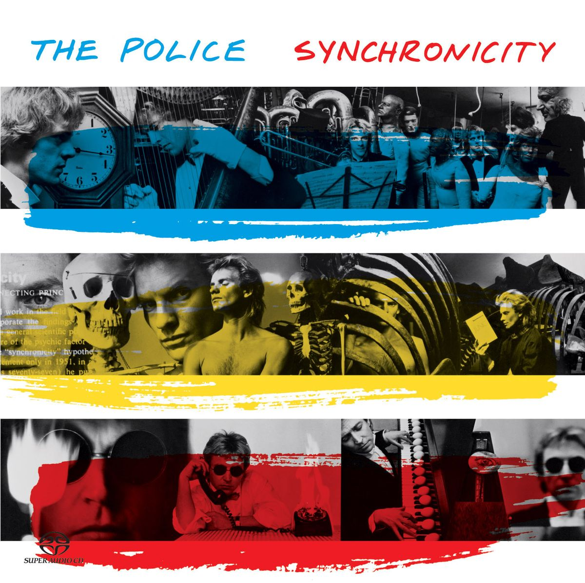
Roxanne
1978
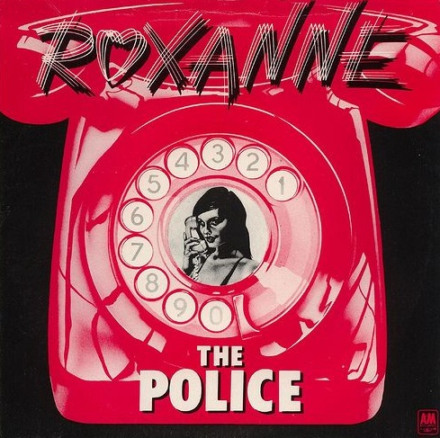
Message In A Bottle
1979
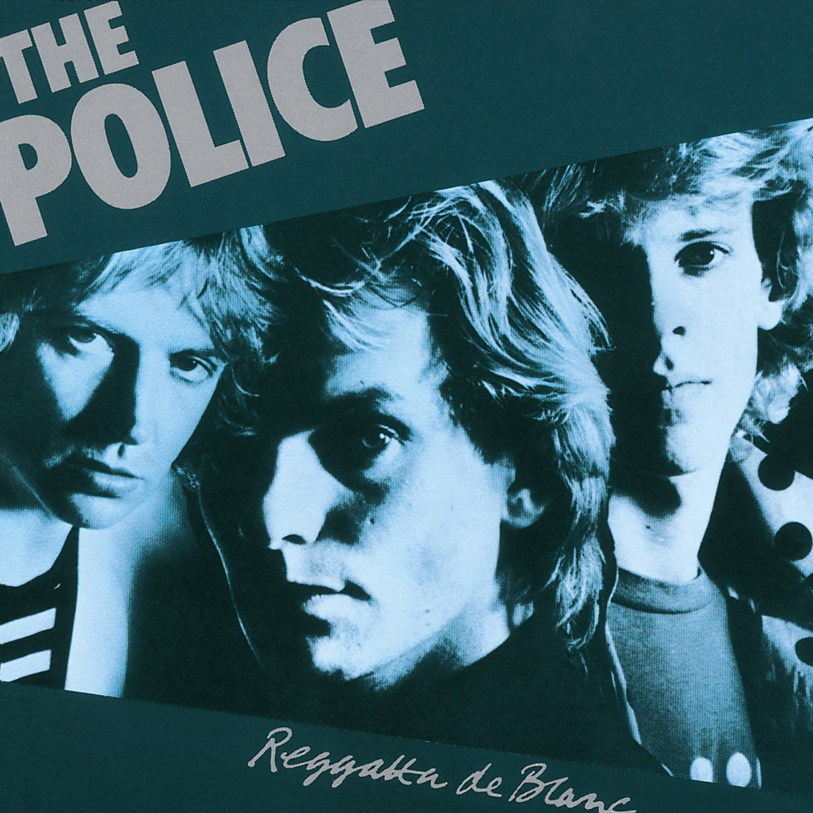
So Lonely
1978
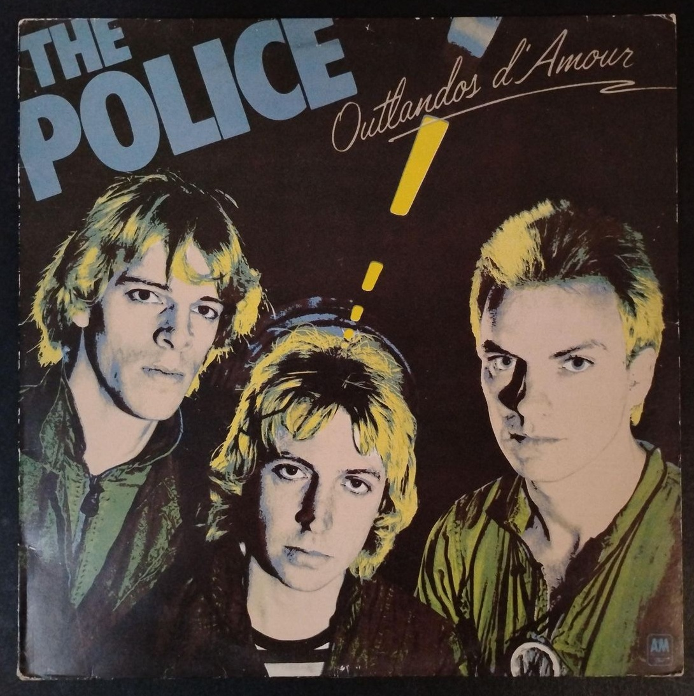
 @thepolicebandofficial
@thepolicebandofficial
Revolución New Wave y Reggae
The police fue una banda británica de rock formada en Londres en 1977. Sus miembros eran Sting, Andy Summers y Stewart Copeland encargados de bajo, guitarra y batería respectivamente. La banda es conocida por su fusión de rock, reggae y punk, y por éxitos como "Roxanne", "Every Breath You Take" y "Message in a Bottle". The Police alcanzó gran popularidad en la década de 1980, ganando varios premios Grammy y Brit Awards. Se disolvieron en 1986, pero su música sigue siendo influyente.
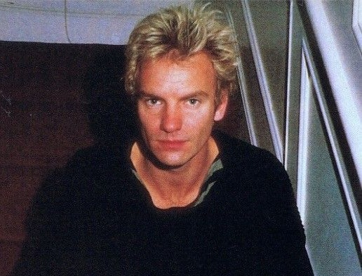
Londres, Inglaterra
El proyecto tomó forma en una ciudad marcada por la urgencia creativa y la energía punk. Londres ofrecía un escenario crudo donde la inmediatez importaba más que la perfección, y ese clima empujó a la banda a construir un sonido directo, nervioso y preciso. Desde el inicio, la propuesta destacó por su economía musical y su tensión rítmica.
Las primeras presentaciones se caracterizaron por una estética minimalista y una ejecución disciplinada. No había exceso, solo intención. Cada nota parecía calculada, y ese enfoque contrastaba con el caos dominante del momento, otorgándoles una identidad propia dentro de la escena emergente.
El salto transatlántico permitió entrar en contacto con espacios donde la new wave comenzaba a consolidarse. En clubes pequeños pero influyentes, el grupo probó su material frente a públicos atentos a la innovación. La recepción confirmó que la fórmula tenía alcance más allá de su lugar de origen.
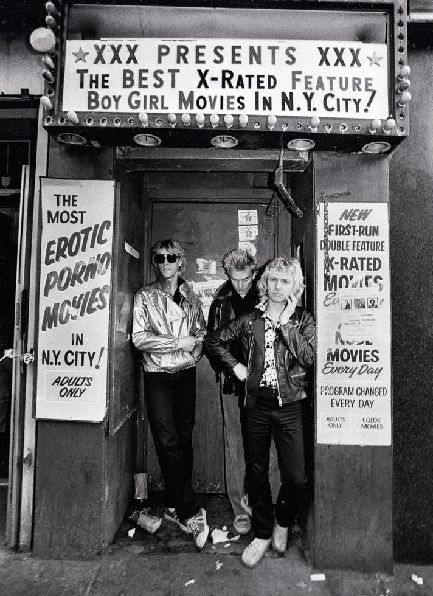
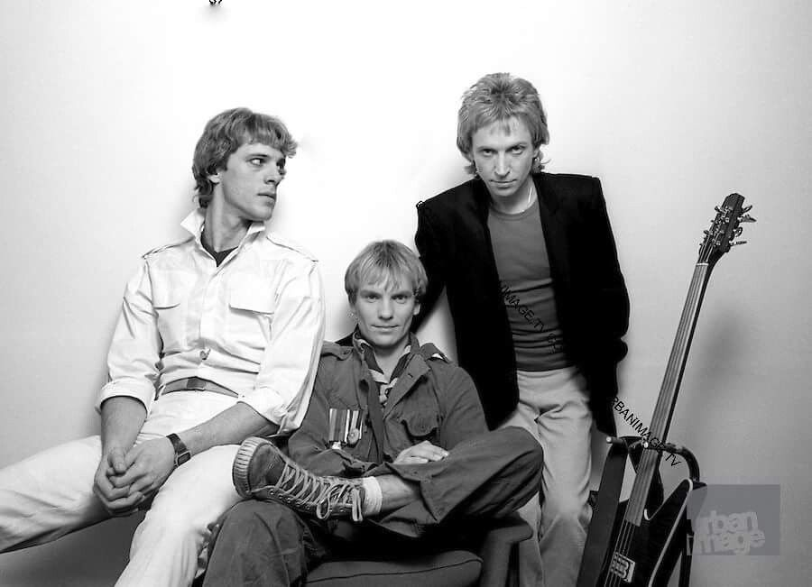
Las primeras grabaciones reflejaron esa tensión urbana y ese espíritu independiente. Las canciones eran breves, incisivas y con letras que transmitían alerta constante. Este periodo sentó las bases de un lenguaje musical reconocible desde los primeros compases.
El arranque no fue explosivo, pero sí estratégico. Cada paso estaba alineado con una visión clara, sin concesiones innecesarias. Así comenzó una trayectoria que pronto superaría el circuito alternativo.
Esta etapa sentó las bases de una carrera marcada por coherencia y dirección clara. No fue un arranque explosivo, pero sí firme y bien calculado.
Paris, Francia
La expansión hacia Europa continental marcó un punto de crecimiento decisivo. París ofreció un entorno más abierto a la experimentación y a la fusión de estilos. La recepción del público confirmó que el proyecto tenía alcance internacional.
El sonido comenzó a incorporar influencias rítmicas más complejas, visibles especialmente en la sección rítmica. Estas incorporaciones aportaron dinamismo sin alterar la esencia del grupo. La evolución se sentía natural y bien integrada.
Las presentaciones en escenarios más grandes exigieron una mayor solidez técnica. El grupo respondió con seguridad y precisión, reforzando su reputación como banda sólida en directo. Cada concierto funcionaba como una declaración de intenciones.
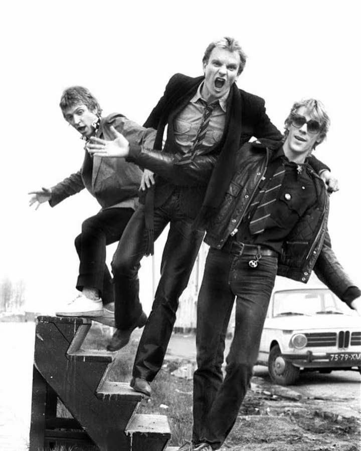
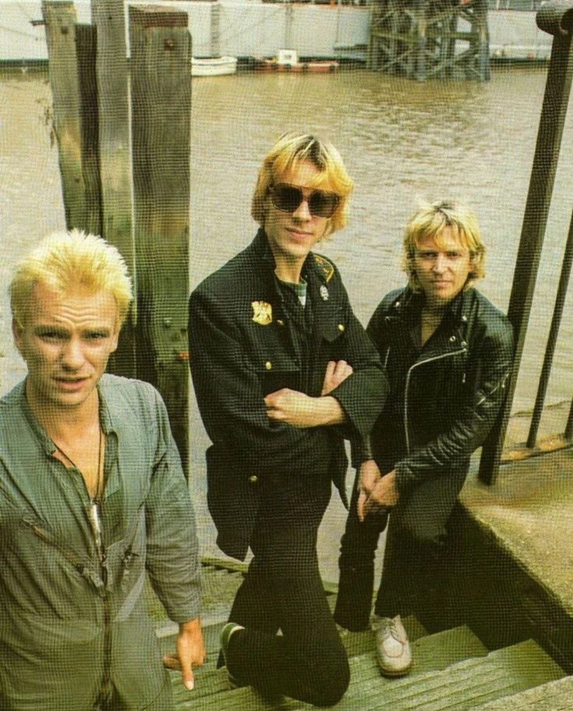
Las letras ganaron profundidad temática, explorando relaciones humanas desde una mirada analítica y contenida. El tono narrativo se volvió más reflexivo, sin perder claridad ni impacto. Esta madurez lírica amplió su público.
El reconocimiento internacional comenzó a consolidarse de forma sostenida. Las canciones cruzaban fronteras sin necesidad de adaptación. La identidad del grupo se mantenía intacta en cada contexto.
Este periodo confirmó que la banda no era un fenómeno pasajero. Había una propuesta artística consistente, capaz de crecer sin perder coherencia.
Montreal, Canadá
El aislamiento creativo de este entorno permitió una concentración absoluta en el proceso musical. Lejos de las presiones externas, el grupo pudo experimentar con mayor libertad. Cada decisión sonora fue cuidadosamente evaluada.
La producción alcanzó un nivel de claridad y equilibrio superior. Los arreglos respiraban espacio y precisión, dando lugar a composiciones más atmosféricas. La música transmitía profundidad sin sacrificar intensidad.
Las letras reflejaron una introspección más marcada, abordando emociones complejas con un lenguaje sobrio. El discurso lírico se volvió más maduro y reflexivo. Esta evolución reforzó la identidad narrativa del grupo.
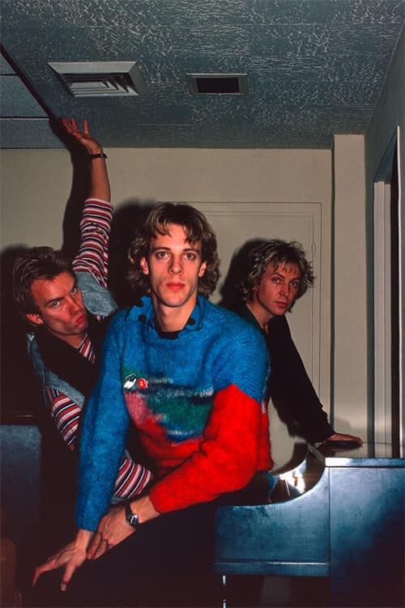
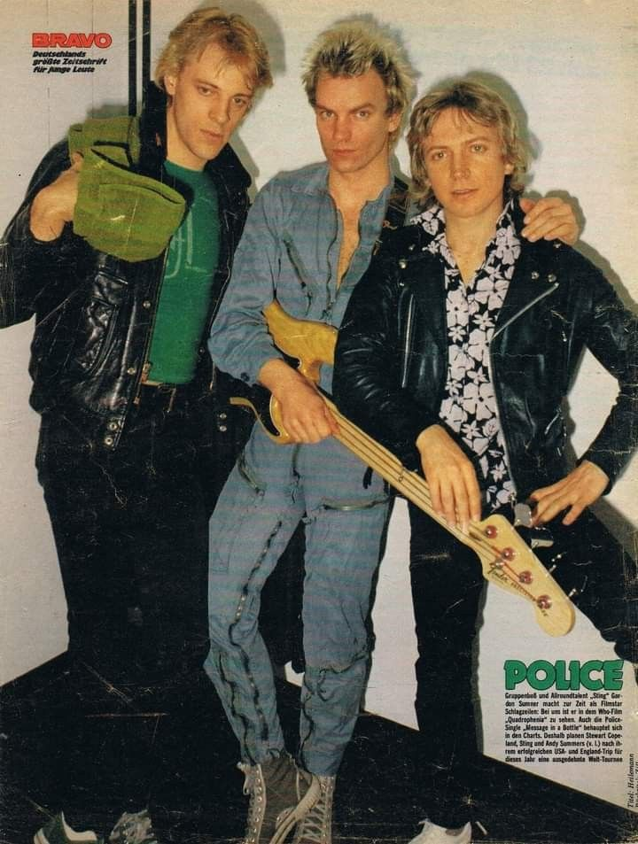
El éxito comercial acompañó este crecimiento artístico de forma natural. Las canciones lograron una difusión global sostenida. El reconocimiento no alteró la dirección creativa.
Las giras asociadas a este periodo mostraron un dominio absoluto del escenario. La ejecución era consistente y profesional en cada presentación. El público percibía una banda en pleno control de su propuesta.
Esta etapa consolidó definitivamente su madurez artística. El equilibrio entre forma y contenido alcanzó un nivel excepcional.
Estados Unidos
El punto culminante llegó con un trabajo que sintetizó toda la evolución previa. La producción alcanzó un nivel de pulido excepcional, y las composiciones lograron un equilibrio perfecto entre emoción y control técnico. Cada canción parecía diseñada para perdurar.
Las letras exploraron conflictos humanos universales, transmitidos con una claridad que conectó de inmediato con el público. La música mantuvo su tensión característica, pero ahora con una madurez evidente. El resultado fue una obra de alcance masivo sin perder identidad.
La gira asociada a este periodo llevó al grupo a los escenarios más importantes del mundo. La ejecución en directo mostró una precisión absoluta, fruto de años de disciplina y cohesión. Cada concierto reafirmaba su estatus.
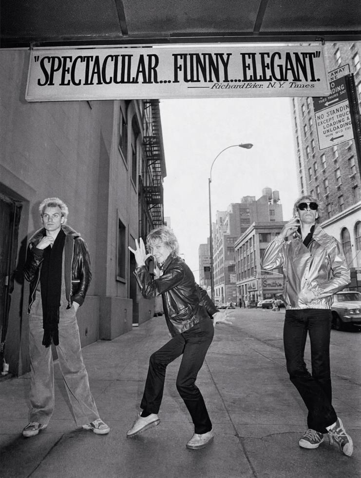
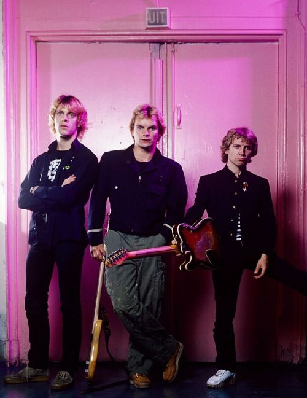
La respuesta del público fue masiva y transversal. Las canciones se integraron rápidamente en el panorama cultural global. El impacto superó fronteras y generaciones.
Las presentaciones en directo alcanzaron un nivel de precisión excepcional. El grupo funcionaba como una unidad perfectamente incronizada. Cada concierto reforzaba su estatus internacional.
Este momento consolidó su legado como una de las bandas más influyentes de su tiempo. Fue una cima alcanzada con disciplina, visión y coherencia artística.
Londres, Inglaterra
Tras alcanzar el punto más alto, llegó una etapa de reflexión y cierre consciente. Londres volvió a ser el escenario para evaluar el recorrido realizado. La decisión de detener la actividad fue estratégica y meditada.
Las últimas apariciones públicas estuvieron marcadas por profesionalismo y respeto mutuo. No hubo desgaste creativo expuesto, sino una retirada medida y elegante. El legado quedó intacto, sin diluirse en repeticiones innecesarias.
Cada integrante siguió caminos individuales, llevando consigo el rigor y la identidad construida en conjunto. La influencia del grupo continuó expandiéndose a través de generaciones posteriores.
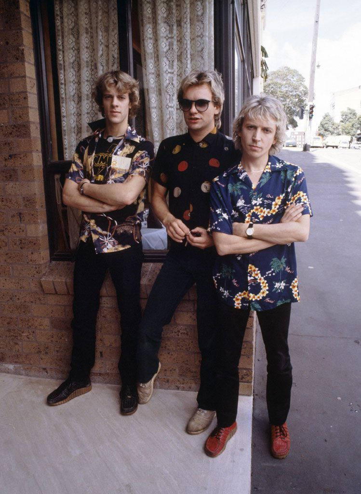
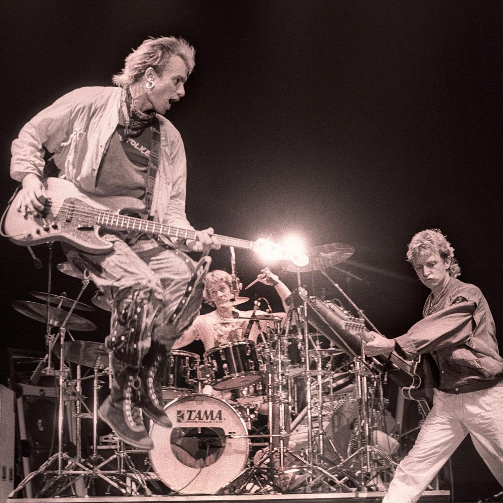
La influencia del grupo continuó creciendo incluso tras la separación. Nuevas generaciones adoptaron su sonido y enfoque. La obra siguió expandiéndose en el tiempo.
El final no respondió a una crisis interna, sino a la comprensión de un ciclo completo. Supieron retirarse sin diluir su impacto cultural. Esa decisión fortaleció su narrativa histórica.
Así se cerró una carrera breve en años, pero extensa en relevancia. Un recorrido definido por coherencia, precisión y excelencia sostenida.




@thepolicebandofficial